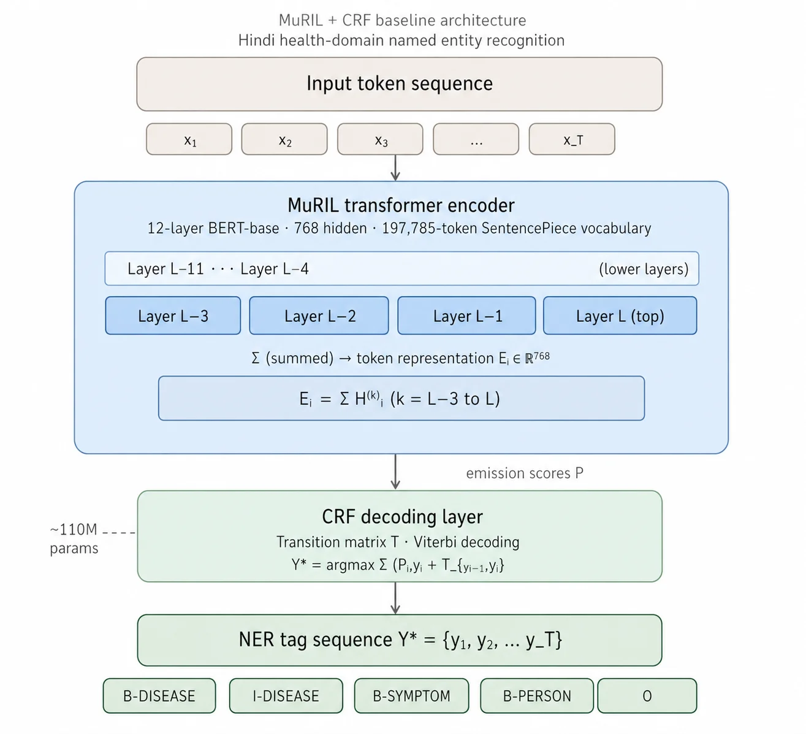
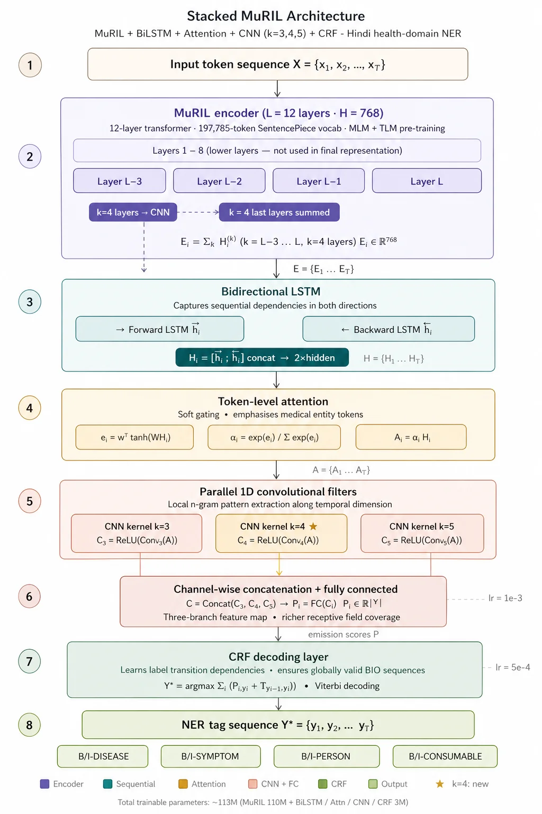

*Electronics & Communication Engineering, VNIT, Nagpur, India
2026 IEEE Guwahati Subsection Conference (GCON)
DOI: 10.1109/GCON69192.2026.11648992
Named Entity Recognition (NER) is a fundamental task in Natural Language Processing that aims to identify and classify named entities in text into predefined categories. In this work, we present an experimental comparison of MuRIL-based architectures for Hindi health-domain NER. A strong baseline model consisting of MuRIL with a Conditional Random Field (CRF) decoding layer, and a stacked architecture that adds together MuRIL embeddings with BiLSTM, token-level attention, and convolutional layers for capturing sequential and local contextual patterns, followed by CRF-based structured decoding are evaluated. We also include additional MuRIL variants such as frozen encoder training, softmax-based decoding, and LoRA-based fine-tuning. Experiments on the Hindi Health Dataset (HHD) show that MuRIL+CRF provides a strong baseline, while the stacked model achieves marginally increased performance with modest category-wise improvements for certain medical entities.
Five MuRIL-based configurations are compared under an identical data split, training protocol, and evaluation procedure:
7,020 trainable params).105,324 trainable params, ~0.04% of the full model).Token representations are formed by summing MuRIL's final four transformer-layer hidden states, then decoded by a CRF layer that models label-transition dependencies and finds the globally valid tag sequence via Viterbi decoding.

Hindi's morphological richness and long, multi-token medical entity spans motivate a deeper stack: MuRIL captures contextual semantics, a Bidirectional LSTM reinforces positional/sequential dependencies, token-level attention emphasizes medically relevant tokens, and parallel 1D convolutions (kernel sizes k = 3, 5) capture local n-gram patterns before a final CRF decoding layer.

Separate learning rates are used per module: 2×10⁻⁵ for the MuRIL encoder, 1×10⁻³ for the BiLSTM/attention/CNN/FC layers, and 5×10⁻⁴ for the CRF layer.
All models evaluated on the HHD test set under the strict IOB2 entity-level protocol (seqeval), mean ± std across 3 seeds (42, 123, 2024).
| Model | Precision | Recall | F1-score |
|---|---|---|---|
| MuRIL + CRF (Baseline) | 0.95 ± 0.015 | 0.93 ± 0.004 | 0.94 ± 0.007 |
| MuRIL (Frozen) + CRF | 0.81 ± 0.007 | 0.82 ± 0.004 | 0.82 ± 0.003 |
| MuRIL + Softmax (No CRF) | 0.91 ± 0.018 | 0.94 ± 0.001 | 0.92 ± 0.01 |
| MuRIL + LoRA + CRF | 0.81 ± 0.025 | 0.77 ± 0.014 | 0.79 ± 0.0061 |
| MuRIL + BiLSTM + Attention + CNN + CRF (Stacked) | 0.94 ± 0.007 | 0.94 ± 0.085 | 0.94 ± 0.008 |
| Model | Consumable | Disease | Person | Symptom |
|---|---|---|---|---|
| Baseline | 0.93 | 0.94 | 0.98 | 0.93 |
| Frozen + CRF | 0.81 | 0.77 | 0.97 | 0.80 |
| Softmax (No CRF) | 0.91 | 0.92 | 0.97 | 0.91 |
| LoRA + CRF | 0.79 | 0.76 | 0.93 | 0.76 |
| Stacked | 0.93 | 0.96 | 0.98 | 0.94 |
Freezing the encoder costs the most (~12 F1 points), showing domain adaptation of the encoder itself matters more than any decoding head on top of it. The Stacked model's gains are concentrated in Disease (+0.02) and Symptom (+0.01) over the baseline — consistent with the paper's conclusion that architectural depth helps only marginally once the encoder is fully fine-tuned.
Two examples pulled directly from the models' test-set predictions (Inference_results/), comparing ground truth against what the Baseline and Stacked models actually predicted.
A clean case — both models get it right.
जब दमा रोग से पीड़ित रोगीPERSON को दौराSYMPTOM पड़ता है तो उसे सूखी या ऐठनदार खांसी होती है।
Ground truth = prediction for both Baseline and Stacked models.
A hard case — both models make the same mistake.
दमा रोग से पीड़ित रोगीPERSON को कफpred: DISEASE सख्त, बदबूदार तथा डोरीदार निकलता है।
कफ (phlegm) is annotated SYMPTOM in the ground truth, but both the Baseline
and Stacked models predict DISEASE — a genuinely ambiguous disease/symptom boundary on a
multi-word medical mention, not a model-specific weakness.
@INPROCEEDINGS{11648992,
author={Mishra, Shreyansh and Pandere, Shubham and Sinha, Saugata},
booktitle={2026 IEEE Guwahati Subsection Conference (GCON)},
title={An Empirical Study of MuRIL-based architectures for Hindi Health Domain NER},
year={2026},
volume={},
number={},
pages={1-6},
keywords={Modeling;Conditional random fields;Labeling;Bidirectional long short term memory;Architecture;Computer architecture;Training;Printing;Sequences;Sequential analysis;Named Entity Recognition;Hindi NER;Healthcare NLP;Sequence labeling;Neural Network;Transformer Fine-Tuning;MuRIL},
doi={10.1109/GCON69192.2026.11648992}
}